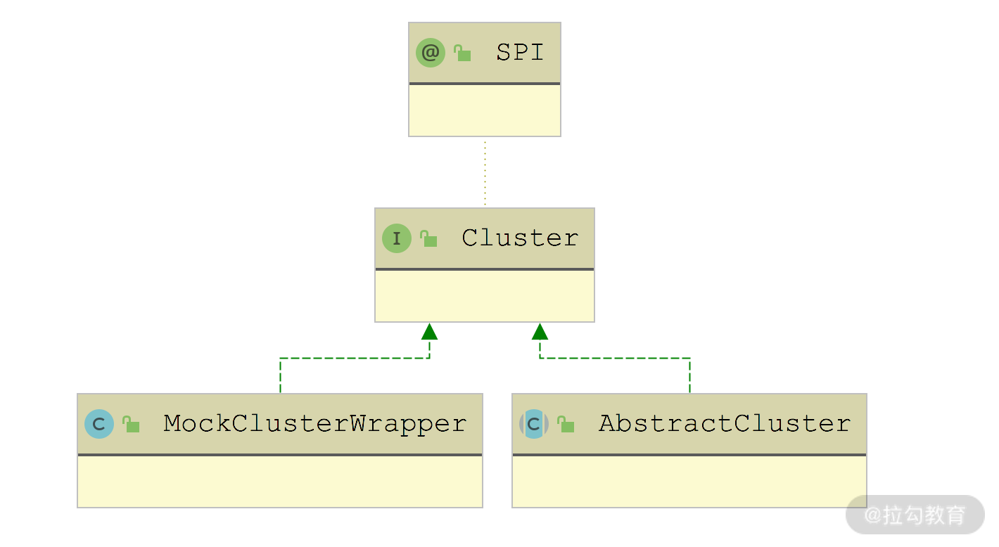
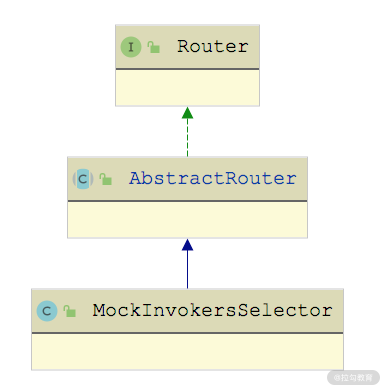

- 00 开篇词 深入掌握 Dubbo 原理与实现，提升你的职场竞争力.md.html
- 01 Dubbo 源码环境搭建：千里之行，始于足下.md.html
- 02 Dubbo 的配置总线：抓住 URL，就理解了半个 Dubbo.md.html
- 03 Dubbo SPI 精析，接口实现两极反转（上）.md.html
- 04 Dubbo SPI 精析，接口实现两极反转（下）.md.html
- 05 海量定时任务，一个时间轮搞定.md.html
- 06 ZooKeeper 与 Curator，求你别用 ZkClient 了（上）.md.html
- 07 ZooKeeper 与 Curator，求你别用 ZkClient 了（下）.md.html
- 08 代理模式与常见实现.md.html
- 09 Netty 入门，用它做网络编程都说好（上）.md.html
- 10 Netty 入门，用它做网络编程都说好（下）.md.html
- 11 简易版 RPC 框架实现（上）.md.html
- 12 简易版 RPC 框架实现（下）.md.html
- 13 本地缓存：降低 ZooKeeper 压力的一个常用手段.md.html
- 14 重试机制是网络操作的基本保证.md.html
- 15 ZooKeeper 注册中心实现，官方推荐注册中心实践.md.html
- 16 Dubbo Serialize 层：多种序列化算法，总有一款适合你.md.html
- 17 Dubbo Remoting 层核心接口分析：这居然是一套兼容所有 NIO 框架的设计？.md.html
- 18 Buffer 缓冲区：我们不生产数据，我们只是数据的搬运工.md.html
- 19 Transporter 层核心实现：编解码与线程模型一文打尽（上）.md.html
- 20 Transporter 层核心实现：编解码与线程模型一文打尽（下）.md.html
- 21 Exchange 层剖析：彻底搞懂 Request-Response 模型（上）.md.html
- 22 Exchange 层剖析：彻底搞懂 Request-Response 模型（下）.md.html
- 23 核心接口介绍，RPC 层骨架梳理.md.html
- 24 从 Protocol 起手，看服务暴露和服务引用的全流程（上）.md.html
- 25 从 Protocol 起手，看服务暴露和服务引用的全流程（下）.md.html
- 26 加餐：直击 Dubbo “心脏”，带你一起探秘 Invoker（上）.md.html
- 27 加餐：直击 Dubbo “心脏”，带你一起探秘 Invoker（下）.md.html
- 28 复杂问题简单化，代理帮你隐藏了多少底层细节？.md.html
- 29 加餐：HTTP 协议 + JSON-RPC，Dubbo 跨语言就是如此简单.md.html
- 30 Filter 接口，扩展 Dubbo 框架的常用手段指北.md.html
- 31 加餐：深潜 Directory 实现，探秘服务目录玄机.md.html
- 32 路由机制：请求到底怎么走，它说了算（上）.md.html
- 33 路由机制：请求到底怎么走，它说了算（下）.md.html
- 34 加餐：初探 Dubbo 动态配置的那些事儿.md.html
- 35 负载均衡：公平公正物尽其用的负载均衡策略，这里都有（上）.md.html
- 36 负载均衡：公平公正物尽其用的负载均衡策略，这里都有（下）.md.html
- 37 集群容错：一个好汉三个帮（上）.md.html
- 38 集群容错：一个好汉三个帮（下）.md.html
- 39 加餐：多个返回值不用怕，Merger 合并器来帮忙.md.html
- 40 加餐：模拟远程调用，Mock 机制帮你搞定.md.html
- 41 加餐：一键通关服务发布全流程.md.html
- 42 加餐：服务引用流程全解析.md.html
- 43 服务自省设计方案：新版本新方案.md.html
- 44 元数据方案深度剖析，如何避免注册中心数据量膨胀？.md.html
- 45 加餐：深入服务自省方案中的服务发布订阅（上）.md.html
- 46 加餐：深入服务自省方案中的服务发布订阅（下）.md.html
- 47 配置中心设计与实现：集中化配置 and 本地化配置，我都要（上）.md.html
- 48 配置中心设计与实现：集中化配置 and 本地化配置，我都要（下）.md.html
- 49 结束语 认真学习，缩小差距.md.html
40 加餐：模拟远程调用，Mock 机制帮你搞定
你好，我是杨四正，今天我和你分享的主题是：Dubbo 中的 Mock 机制。
Mock 机制是 RPC 框架中非常常见、也非常有用的功能，不仅可以用来实现服务降级，还可以用来在测试中模拟调用的各种异常情况。Dubbo 中的 Mock 机制是在 Consumer 这一端实现的，具体来说就是在 Cluster 这一层实现的。
在前面第 38 课时中，我们深入介绍了 Dubbo 提供的多种 Cluster 实现以及相关的 Cluster Invoker 实现，其中的 ZoneAwareClusterInvoker 就涉及了 MockClusterInvoker 的相关内容。本课时我们就来介绍 Dubbo 中 Mock 机制的全链路流程，不仅包括与 Cluster 接口相关的 MockClusterWrapper 和 MockClusterInvoker，我们还会回顾前面课程的 Router 和 Protocol 接口，分析它们与 Mock 机制相关的实现。
MockClusterWrapper
Cluster 接口有两条继承线（如下图所示）：一条线是 AbstractCluster 抽象类，这条继承线涉及的全部 Cluster 实现类我们已经在[第 37 课时]中深入分析过了；另一条线是 MockClusterWrapper 这条线。

Cluster 继承关系图
MockClusterWrapper 是 Cluster 对象的包装类，我们在之前[第 4 课时]介绍 Dubbo SPI 机制时已经分析过 Wrapper 的功能，MockClusterWrapper 类会对 Cluster 进行包装。下面是 MockClusterWrapper 的具体实现，其中会在 Cluster Invoker 对象的基础上使用 MockClusterInvoker 进行包装：
public class MockClusterWrapper implements Cluster {
private Cluster cluster;
// Wrapper类都会有一个拷贝构造函数
public MockClusterWrapper(Cluster cluster) {
this.cluster = cluster;
}
@Override
public <T> Invoker<T> join(Directory<T> directory) throws RpcException {
// 用MockClusterInvoker进行包装
return new MockClusterInvoker<T>(directory,
this.cluster.join(directory));
}
}
MockClusterInvoker
MockClusterInvoker 是 Dubbo Mock 机制的核心，它主要是通过 invoke()、doMockInvoke() 和 selectMockInvoker() 这三个核心方法来实现 Mock 机制的。
下面我们就来逐个介绍这三个方法的具体实现。
首先来看 MockClusterInvoker 的 invoke() 方法，它会先判断是否需要开启 Mock 机制。如果在 mock 参数中配置的是 force 模式，则会直接调用 doMockInvoke() 方法进行 mock。如果在 mock 参数中配置的是 fail 模式，则会正常调用 Invoker 发起请求，在请求失败的时候，会调动 doMockInvoke() 方法进行 mock。下面是 MockClusterInvoker 的 invoke() 方法的具体实现：
public Result invoke(Invocation invocation) throws RpcException {
Result result = null;
// 从URL中获取方法对应的mock配置
String value = getUrl().getMethodParameter(invocation.getMethodName(), MOCK_KEY, Boolean.FALSE.toString()).trim();
if (value.length() == 0 || "false".equalsIgnoreCase(value)) {
// 若mock参数未配置或是配置为false，则不会开启Mock机制，直接调用底层的Invoker
result = this.invoker.invoke(invocation);
} else if (value.startsWith("force")) {
//force:direct mock
// 若mock参数配置为force，则表示强制mock，直接调用doMockInvoke()方法
result = doMockInvoke(invocation, null);
} else {
// 如果mock配置的不是force，那配置的就是fail，会继续调用Invoker对象的invoke()方法进行请求
try {
result = this.invoker.invoke(invocation);
} catch (RpcException e) {
if (e.isBiz()) { // 如果是业务异常，会直接抛出
throw e;
}
// 如果是非业务异常，会调用doMockInvoke()方法返回mock结果
result = doMockInvoke(invocation, e);
}
}
return result;
}
在 doMockInvoke() 方法中，首先调用 selectMockInvoker() 方法获取 MockInvoker 对象，并调用其 invoke() 方法进行 mock 操作。doMockInvoke() 方法的具体实现如下：
private Result doMockInvoke(Invocation invocation, RpcException e) {
Result result = null;
Invoker<T> minvoker;
// 调用selectMockInvoker()方法过滤得到MockInvoker
List<Invoker<T>> mockInvokers = selectMockInvoker(invocation);
if (CollectionUtils.isEmpty(mockInvokers)) {
// 如果selectMockInvoker()方法未返回MockInvoker对象，则创建一个MockInvoker
minvoker = (Invoker<T>) new MockInvoker(getUrl(), directory.getInterface());
} else {
minvoker = mockInvokers.get(0);
}
try {
// 调用MockInvoker.invoke()方法进行mock
result = minvoker.invoke(invocation);
} catch (RpcException me) {
if (me.isBiz()) { // 如果是业务异常，则在Result中设置该异常
result = AsyncRpcResult.newDefaultAsyncResult(me.getCause(), invocation);
} else {
throw new RpcException(...);
}
} catch (Throwable me) {
throw new RpcException(...);
}
return result;
}
selectMockInvoker() 方法中并没有进行 MockInvoker 的选择或是创建，它仅仅是将 Invocation 附属信息中的 invocation.need.mock 属性设置为 true，然后交给 Directory 中的 Router 集合进行处理。selectMockInvoker() 方法的具体实现如下：
private List<Invoker<T>> selectMockInvoker(Invocation invocation) {
List<Invoker<T>> invokers = null;
if (invocation instanceof RpcInvocation) {
// 将Invocation附属信息中的invocation.need.mock属性设置为true
((RpcInvocation) invocation).setAttachment(INVOCATION_NEED_MOCK, Boolean.TRUE.toString());
invokers = directory.list(invocation);
}
return invokers;
}
MockInvokersSelector
在[第 32 课时]和[第 33 课时]中，我们介绍了 Router 接口多个实现类，但当时并没有深入介绍 Mock 相关的 Router 实现类—— MockInvokersSelector，它的继承关系如下图所示：

MockInvokersSelector 继承关系图
MockInvokersSelector 是 Dubbo Mock 机制相关的 Router 实现，在未开启 Mock 机制的时候，会返回正常的 Invoker 对象集合；在开启 Mock 机制之后，会返回 MockInvoker 对象集合。MockInvokersSelector 的具体实现如下：
public <T> List<Invoker<T>> route(final List<Invoker<T>> invokers,
URL url, final Invocation invocation) throws RpcException {
if (CollectionUtils.isEmpty(invokers)) {
return invokers;
}
if (invocation.getObjectAttachments() == null) {
// attachments为null，会过滤掉MockInvoker，只返回正常的Invoker对象
return getNormalInvokers(invokers);
} else {
String value = (String) invocation.getObjectAttachments().get(INVOCATION_NEED_MOCK);
if (value == null) {
// invocation.need.mock为null，会过滤掉MockInvoker，只返回正常的Invoker对象
return getNormalInvokers(invokers);
} else if (Boolean.TRUE.toString().equalsIgnoreCase(value)) {
// invocation.need.mock为true，会过滤掉MockInvoker，只返回正常的Invoker对象
return getMockedInvokers(invokers);
}
}
// invocation.need.mock为false，则会将MockInvoker和正常的Invoker一起返回
return invokers;
}
在 getMockedInvokers() 方法中，会根据 URL 的 Protocol 进行过滤，只返回 Protocol 为 mock 的 Invoker 对象，而 getNormalInvokers() 方法只会返回 Protocol 不为 mock 的 Invoker 对象。这两个方法的具体实现比较简单，这里就不再展示，你若感兴趣的话可以参考源码进行学习。
MockProtocol & MockInvoker
介绍完 Mock 功能在 Cluster 层的相关实现之后，我们还要来看一下 Dubbo 在 RPC 层对 Mock 机制的支持，这里涉及 MockProtocol 和 MockInvoker 两个类。
首先来看 MockProtocol，它是 Protocol 接口的扩展实现，扩展名称为 mock。MockProtocol 只能通过 refer() 方法创建 MockInvoker，不能通过 export() 方法暴露服务，具体实现如下：
final public class MockProtocol extends AbstractProtocol {
public int getDefaultPort() { return 0;}
public <T> Exporter<T> export(Invoker<T> invoker) throws RpcException {
// 直接抛出异常，无法暴露服务
throw new UnsupportedOperationException();
}
public <T> Invoker<T> protocolBindingRefer(Class<T> type, URL url) throws RpcException {
// 直接创建MockInvoker对象
return new MockInvoker<>(url, type);
}
}
下面我们再来看 MockInvoker 是如何解析各类 mock 配置的，以及如何根据不同 mock 配置进行不同处理的。这里我们重点来看 MockInvoker.invoke() 方法，其中针对 mock 参数进行的分类处理具体有下面三条分支。
- mock 参数以 return 开头：直接返回 mock 参数指定的固定值，例如，empty、null、true、false、json 等。mock 参数中指定的固定返回值将会由 parseMockValue() 方法进行解析。
- mock 参数以 throw 开头：直接抛出异常。如果在 mock 参数中没有指定异常类型，则抛出 RpcException，否则抛出指定的 Exception 类型。
- mock 参数为 true 或 default 时，会查找服务接口对应的 Mock 实现；如果是其他值，则直接作为服务接口的 Mock 实现。拿到 Mock 实现之后，转换成 Invoker 进行调用。
MockInvoker.invoke() 方法的具体实现如下所示：
public Result invoke(Invocation invocation) throws RpcException {
if (invocation instanceof RpcInvocation) {
((RpcInvocation) invocation).setInvoker(this);
}
// 获取mock值(会从URL中的methodName.mock参数或mock参数获取)
String mock = null;
if (getUrl().hasMethodParameter(invocation.getMethodName())) {
mock = getUrl().getParameter(invocation.getMethodName() + "." + MOCK_KEY);
}
if (StringUtils.isBlank(mock)) {
mock = getUrl().getParameter(MOCK_KEY);
}
if (StringUtils.isBlank(mock)) { // 没有配置mock值，直接抛出异常
throw new RpcException(new IllegalAccessException("mock can not be null. url :" + url));
}
// mock值进行处理，去除"force:"、"fail:"前缀等
mock = normalizeMock(URL.decode(mock));
if (mock.startsWith(RETURN_PREFIX)) { // mock值以return开头
mock = mock.substring(RETURN_PREFIX.length()).trim();
try {
// 获取响应结果的类型
Type[] returnTypes = RpcUtils.getReturnTypes(invocation);
// 根据结果类型，对mock值中结果值进行转换
Object value = parseMockValue(mock, returnTypes);
// 将固定的mock值设置到Result中
return AsyncRpcResult.newDefaultAsyncResult(value, invocation);
} catch (Exception ew) {
throw new RpcException("mock return invoke error. method :" + invocation.getMethodName()
+ ", mock:" + mock + ", url: " + url, ew);
}
} else if (mock.startsWith(THROW_PREFIX)) { // mock值以throw开头
mock = mock.substring(THROW_PREFIX.length()).trim();
if (StringUtils.isBlank(mock)) { // 未指定异常类型，直接抛出RpcException
throw new RpcException("mocked exception for service degradation.");
} else { // 抛出自定义异常
Throwable t = getThrowable(mock);
throw new RpcException(RpcException.BIZ_EXCEPTION, t);
}
} else { // 执行mockService得到mock结果
try {
Invoker<T> invoker = getInvoker(mock);
return invoker.invoke(invocation);
} catch (Throwable t) {
throw new RpcException("Failed to create mock implementation class " + mock, t);
}
}
}
针对 return 和 throw 的处理逻辑比较简单，但 getInvoker() 方法略微复杂些，其中会处理 MOCK_MAP 缓存的读写、Mock 实现类的查找、生成和调用 Invoker，具体实现如下：
private Invoker<T> getInvoker(String mockService) {
// 尝试从MOCK_MAP集合中获取对应的Invoker对象
Invoker<T> invoker = (Invoker<T>) MOCK_MAP.get(mockService);
if (invoker != null) {
return invoker;
}
// 根据serviceType查找mock的实现类
Class<T> serviceType = (Class<T>) ReflectUtils.forName(url.getServiceInterface());
T mockObject = (T) getMockObject(mockService, serviceType);
// 创建Invoker对象
invoker = PROXY_FACTORY.getInvoker(mockObject, serviceType, url);
if (MOCK_MAP.size() < 10000) { // 写入缓存
MOCK_MAP.put(mockService, invoker);
}
return invoker;
}
在 getMockObject() 方法中会检查 mockService 参数是否为 true 或 default，如果是的话，则在服务接口后添加 Mock 字符串，作为服务接口的 Mock 实现；如果不是的话，则直接将 mockService 实现作为服务接口的 Mock 实现。getMockObject() 方法的具体实现如下：
public static Object getMockObject(String mockService, Class serviceType) {
if (ConfigUtils.isDefault(mockService)) {
// 如果mock为true或default值，会在服务接口后添加Mock字符串，得到对应的实现类名称，并进行实例化
mockService = serviceType.getName() + "Mock";
}
Class<?> mockClass = ReflectUtils.forName(mockService);
if (!serviceType.isAssignableFrom(mockClass)) {
// 检查mockClass是否继承serviceType接口
throw new IllegalStateException("...");
}
return mockClass.newInstance();
}
总结
本课时我们重点介绍了 Dubbo 中 Mock 机制涉及的全部内容。
- 首先，我们介绍了 Cluster 接口的 MockClusterWrapper 实现类，它负责创建 MockClusterInvoker 对象，是 Dubbo Mock 机制的入口。
- 接下来，我们介绍了 MockClusterInvoker 这个 Cluster 层的 Invoker 实现，它是 Dubbo Mock 机制的核心，会根据配置决定请求是否启动了 Mock 机制以及在何种情况下才会触发 Mock。
- 随后，我们又讲解了 MockInvokersSelector 这个 Router 接口实现，它会在路由规则这个层面决定是否返回 MockInvoker 对象。
- 最后，我们分析了 Protocol 层与 Mock 相关的实现—— MockProtocol，以及 MockInvoker 这个真正进行 Mock 操作的 Invoker 实现。在 MockInvoker 中会解析各类 Mock 配置，并根据不同 Mock 配置进行不同的 Mock 操作。